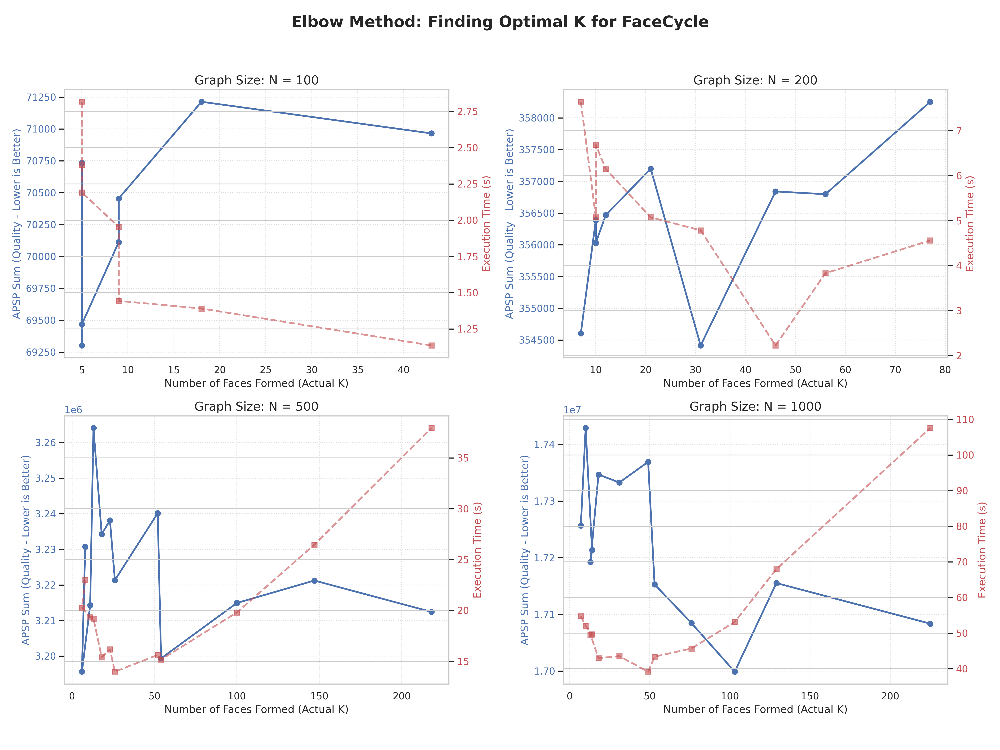

서론
Face-Cycle이란 방식을 만들어, 순환을 통한 연결성을 보장하고자 했다. 그렇다면, 그래프에서 최적 면의 개수는 어떻게 찾을 것인가?
면 개수 elbow 찾기

n개의 정점을 가진 그래프에 면의 개수 k를 증가해가면서 테스트를 진행했다. n은 100, 200, 500, 1000으로 설정했고, k는 3, 5, 7, 10, 20, 30, 50, 75, 100, 150, 200, 300, 500 의 후보를 가지고 n/2보다 작은 값까지 도달하도록 설정했다.
왜 k의 상한선을 두었냐 함은 너무 잘게 쪼개지는 것은 원하지 않기 때문이다. 면을 잘게 쪼개게 되면 본래 목표인 QUBO Solver에 넣을 간선들이 없어진다. 그래서 적당한 면을 원한다.
유의미한 결과가 보이지 않았다. 그나마 해석하자면, n // 10인 부분에서 그나마 괜찮은 성능을 보인다는 점이다. 이것이 항상 성립하는 것도 아니므로, 하이퍼 파라미터로 줄 때는 이보다 작은 어떤 값을 선택하거나, 해당 값을 주면 될 듯하다.
지금은 k를 고정값으로 했는데, 첫 T-join 값까지 10씩 증가하는 값으로 설정해보자.
일관된 elbow는 없으나, 경험적으로 n // 10인 부분에서 잘 되긴 한다.
이를 다음 실험부터 진행하자.